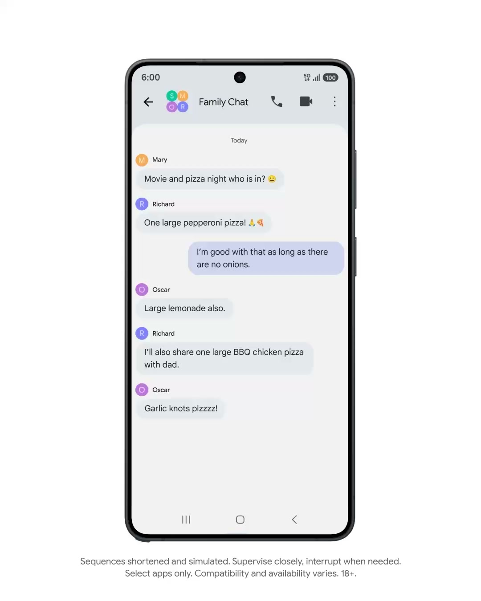
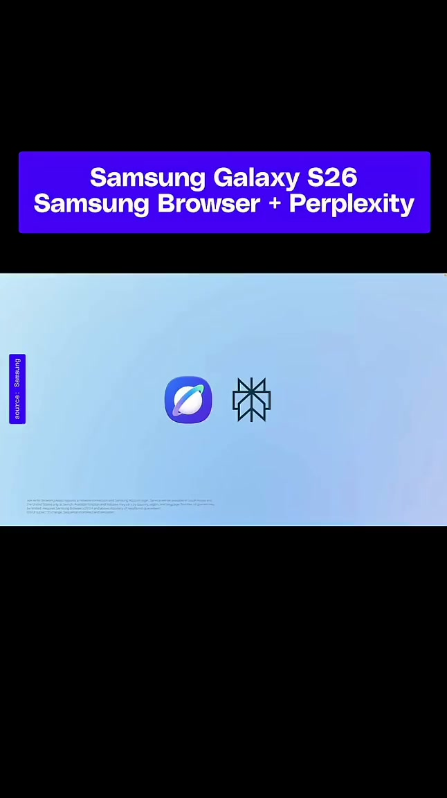
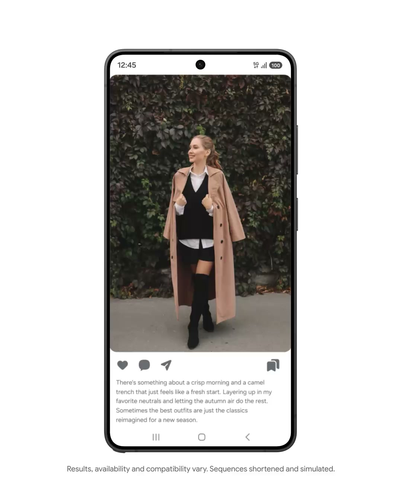
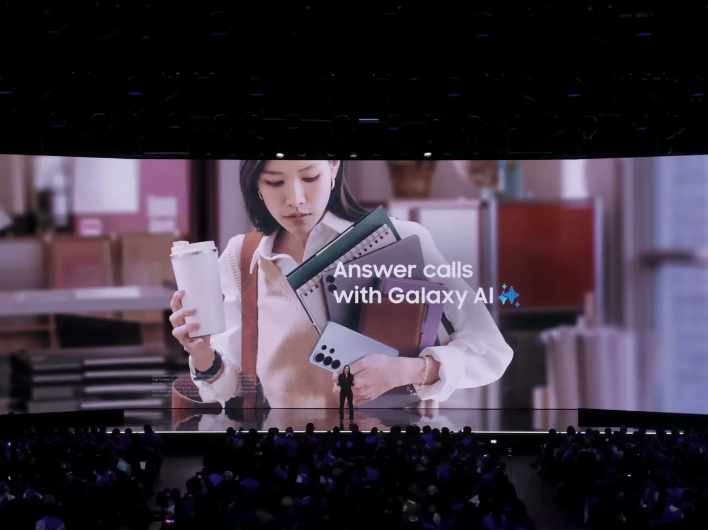
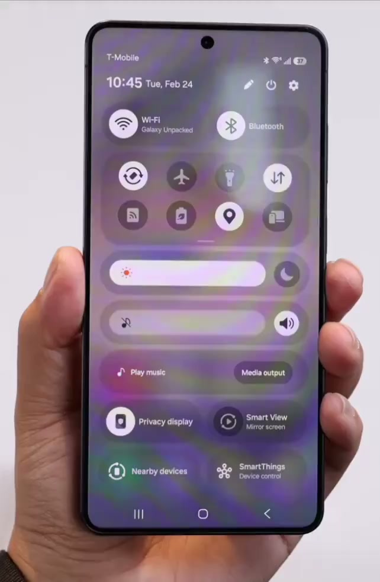

三星 S26（海外版）AI 特性分析及洞察
核心摘要
当前旗舰手机 AI 正经历从"单点工具"向"系统级智能体（Agent）"的持续深化，三星 Galaxy S26 海外版进一步深度集成谷歌 Gemini 多模态大模型，通过端侧推理能力与系统级 AI 框架的打通，基于安卓标准 API 实现了更流畅的授权式跨应用 AI 操作，大幅提升了系统智能体的执行效率。
业务洞察
手机端侧 AI 的进步短期内不会颠覆精品重度游戏"重决策、重沉浸"的下载与游玩链路，但其"多模态视觉检索"能力本质上却有效缩短了游戏内容的"发现 - 转化"漏斗。需持续关注用户端侧行为习惯的变化，警惕可能出现的"意图分发"新入口。
三星S系列AI演进
趋势：交互范式正从"手动唤醒工具"向"意图驱动，机器代办"转移
| 机型 | 核心战略 | 交互范式演进 | 核心功能表现 |
|---|---|---|---|
| S24 | AI 手机元年，系统级 AI 能力首发 | 工具主动适配，人找功能为主 | 首发 Galaxy AI 框架，核心落地即圈即搜、AI 生成式编辑、系统通话实时同传、AI 笔记/文案辅助。AI 能力深度集成 One UI 原生模块，覆盖高频基础场景。 |
| S25 | 能力泛化，端侧模型与场景深度下沉 | 场景联动辅助，AI 主动提效 | 升级 Gemini Nano 2 端侧模型，AI 能力从原生场景向第三方应用适配拓展。强化端侧多模态理解、影像 AI 生成、系统级翻译能力，优化跨应用数据互通的 AI 辅助体验。 |
| S26 | 系统级智能体深化，意图驱动闭环落地 | 意图驱动，机器代办 | 基于端侧+云端混合大模型，升级 Agent 式跨应用自主调度能力，支持多任务并行处理与多目标检索。实现用户自然语言意图到多步跨应用操作的闭环执行，进一步降低用户操作门槛。 |
多维对比：三星S26 vs 豆包手机 vs 苹果17
三款机型代表端侧 AI Agent 三大主流技术路线：安卓标准 API 驱动、视觉 UI 自动化、iOS 封闭生态限定 API，路线差异直接决定能力边界、覆盖范围与稳定性。
| 评估维度 | 📱 三星 S26 海外 API 标杆 | 🥟 豆包 AI 手机 国内视觉方案 | 🍎 苹果 iPhone 17 iOS 封闭生态 |
|---|---|---|---|
| 底层执行路线 | 安卓标准 API 接口调用 | UI 树解析 + 模拟用户操作 | Siri Intents 限定标准接口 |
| 跨应用覆盖率 | 中（依赖应用适配） | 高（无接口依赖） | 低（仅适配第一方及部分深度合作应用） |
| 交互连贯性 | 高（后台聚合处理） | 中（需多应用跳转） | 高（原生闭环，场景有限） |
| 执行稳定性 | 高（不受 UI 迭代影响） | 低（易被弹窗/变更打断） | 高（封闭生态强管控） |
| 视觉检索深度 | 高（多目标并行识别） | 高（全局语义理解 + 推理） | 中（开放能力有限） |
| 业务适配成本 | 中（需适配标准接口） | 低（仅优化无障碍标签） | 高（场景受限，适配成本高） |
核心 AI 特性与演示
Agentic AI 跨应用调度
系统级智能体用户下达一句话指令，AI 在安全隔离的虚拟沙箱中，通过屏幕语义理解和底层 API 调用的双路径，自动完成多个 App 的切换和操作。但涉及资金的支付确认，必须由用户手动验证授权。

初期仅开放食品外卖、生鲜杂货、网约车三大类合规生活场景，首批仅在美国、韩国市场推送测试版，游戏类应用暂不在系统级适配范围内。
Ask AI 深度检索
深度检索集成 Perplexity 引擎，将手机变成主动信息处理终端，解决多线信息整理痛点。原生浏览器中，调用 Ask AI（Hey Plex），可直接对并行打开的多个研报/长文网页进行交叉比对，输出结构化摘要。

多目标检索（升级版画圈搜索）
视觉检索S26 的画圈搜索具备一次性解析多个关联视觉元素的能力，可并行输出画面中多个独立目标的搜索结果。

端侧通话过滤与物理防窥屏
隐私防御端侧不联网的本地微模型可自动代接未知来电，实时转录文字摘要并进行反诈拦截；同时 S26 采用了双像素架构实现硬件级的物理防窥屏。


业务思考
持续关注"意图分发"新入口
需持续跟进 AI"意图分发"新赛道的规则变化，前置布局端侧 AI 分发能力与适配，同步重点监控豆包手机 2.0 等竞品的功能迭代与市场舆情，提前制定应对预案。
关注用户触达的 AI 适配
宣发物料（CG、海报、短视频切片）需强化核心视觉资产（高辨识度角色、专属 LOGO、关键道具）的特征预埋，确保端侧 AI 视觉检索能力可精准识别，实现有效截流与触达。
电话营销需注重话术表达，接通后的前 5 秒采用高信息密度表达核心权益内容，规避端侧 AI 模型的骚扰来电拦截，保障高净值用户（大 R）的有效触达率。